Esta es la ventana maestra de módulos enfocado en seguridad del sistema; en el podemos insertar, editarn, actualizar y consultar información relacionada a los módulos que menejará el sistema.
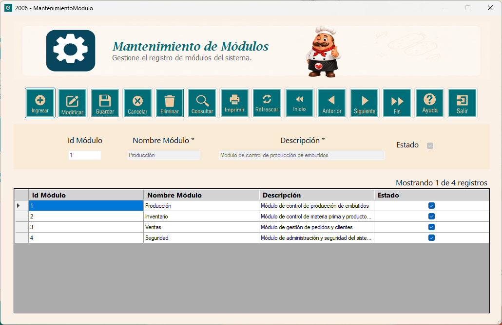
Este botón permite liberar los campos para poder ingresar información; exceptuando el ID, que se genera de manera autimática. El estado del módulo esta activo de manera predeterminada. Este botón funciona junto al de "Ingresar" y "Consultar".
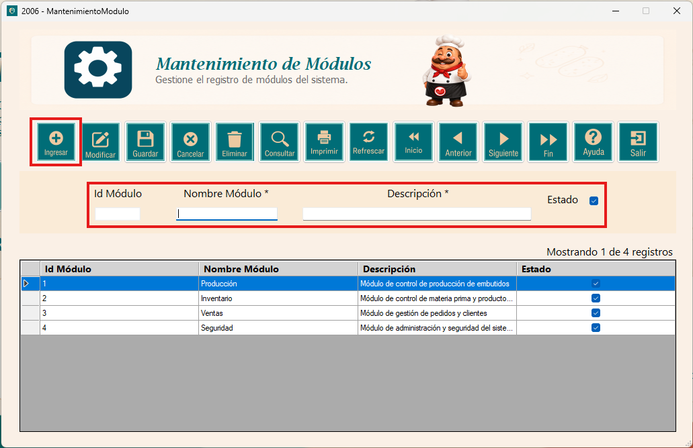
Luego de presionar el botón "Ingresar" y de haber llenado los campos con la información necesaria, al presionarlo nos saldra un mensaje que el registro se a guardado y al aceptar se actualiza la tabla; mostrando el nuevo registro.
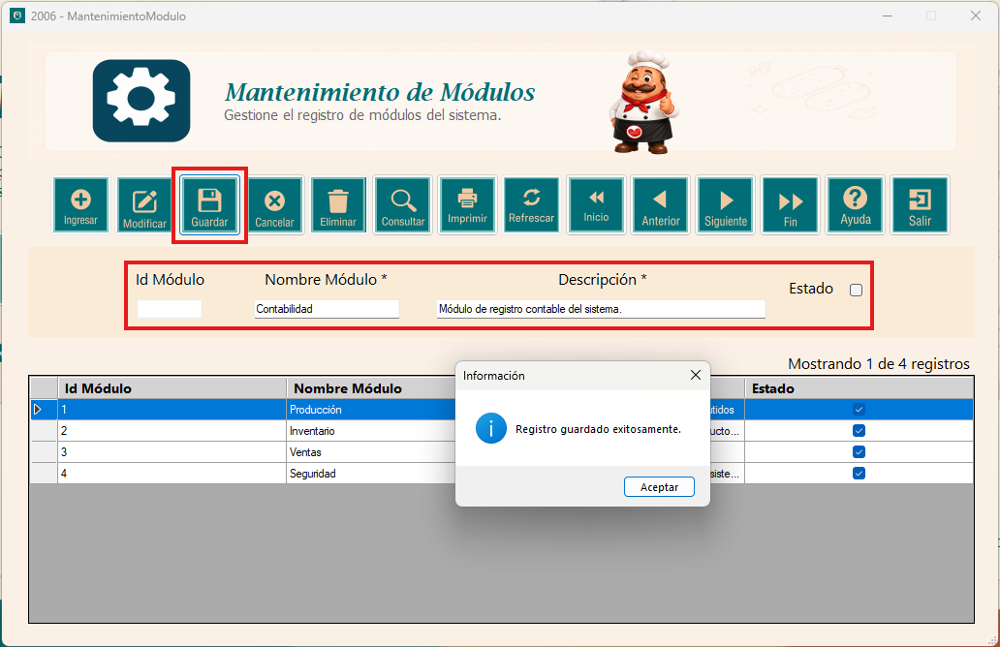
Luego de seleccionar el registro que deseamos modificar, al presionar este botón se habilitan los campos con la información de este registro y cuando terminemos de modificar el registro, le damos al botón de "Guardar" y tendremos un mensaje de actualización y en breves la tabla actualizada.
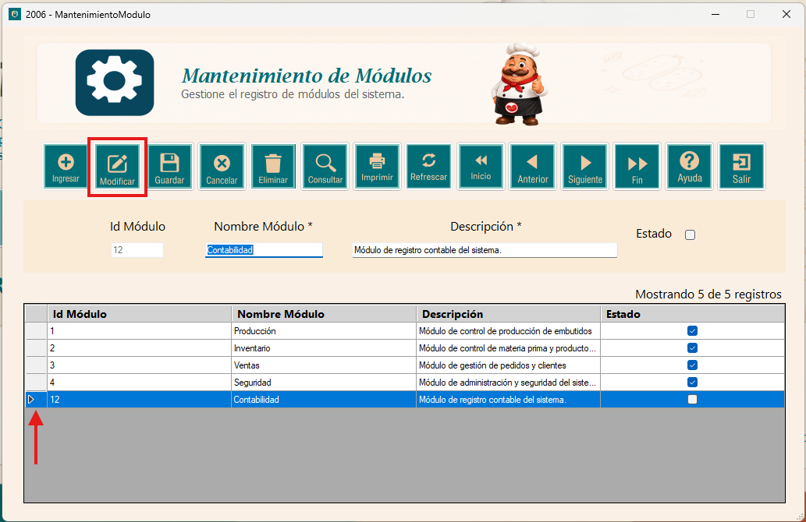
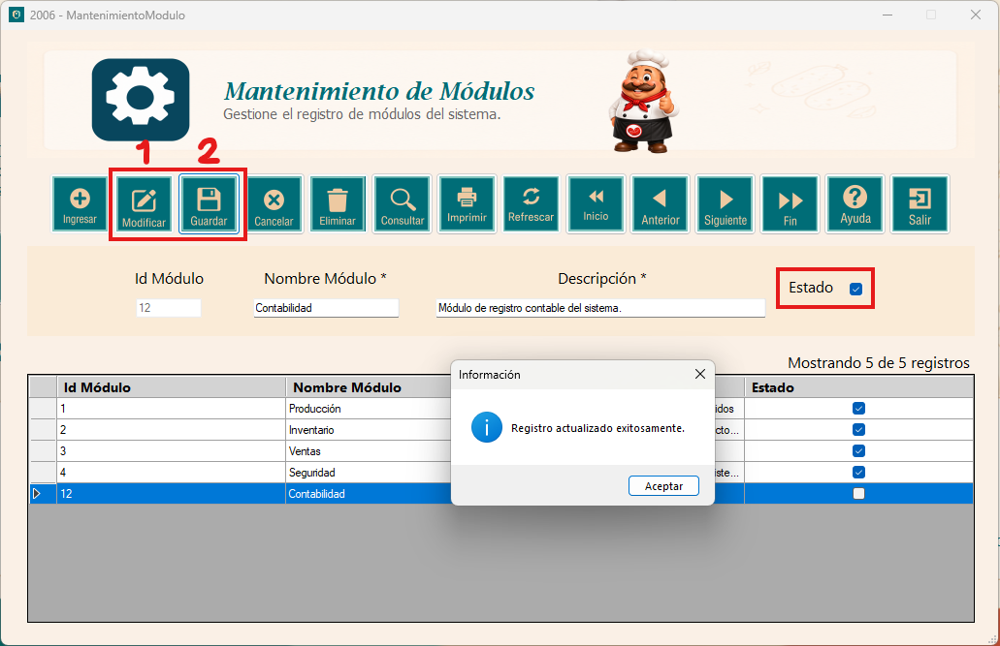
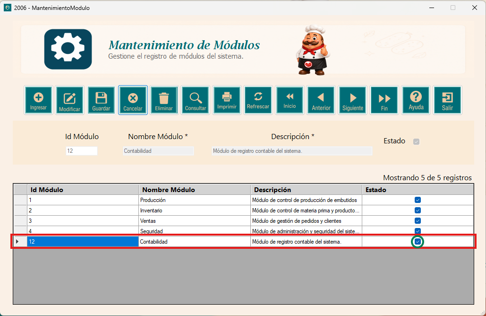
Luego de presionar el botón "Ingresar", debemos de colocar el nombre del módulo y solamente con eso, presionamos este botón; con esto filtraremos la tabla para obtener el registro con ese nombre.
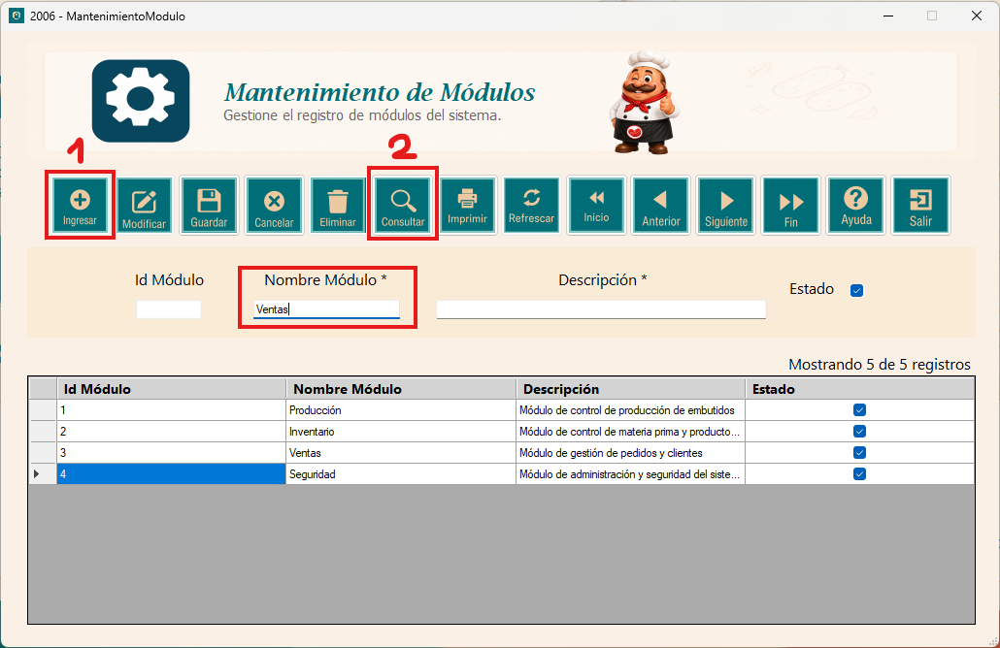
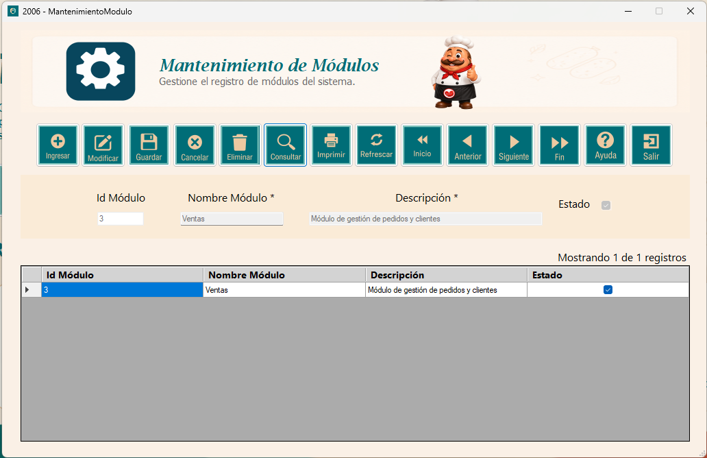
Luego de seleccionar el registro que deseamos eliminar, al presionar este botón, nos preguntará si de verdad queremos eliminar el registro y si accedemos, el registro se eliminará y por ende se actualiza la tabla sin ese registro.
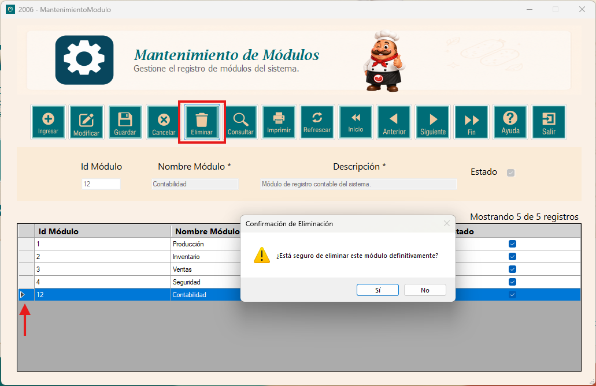
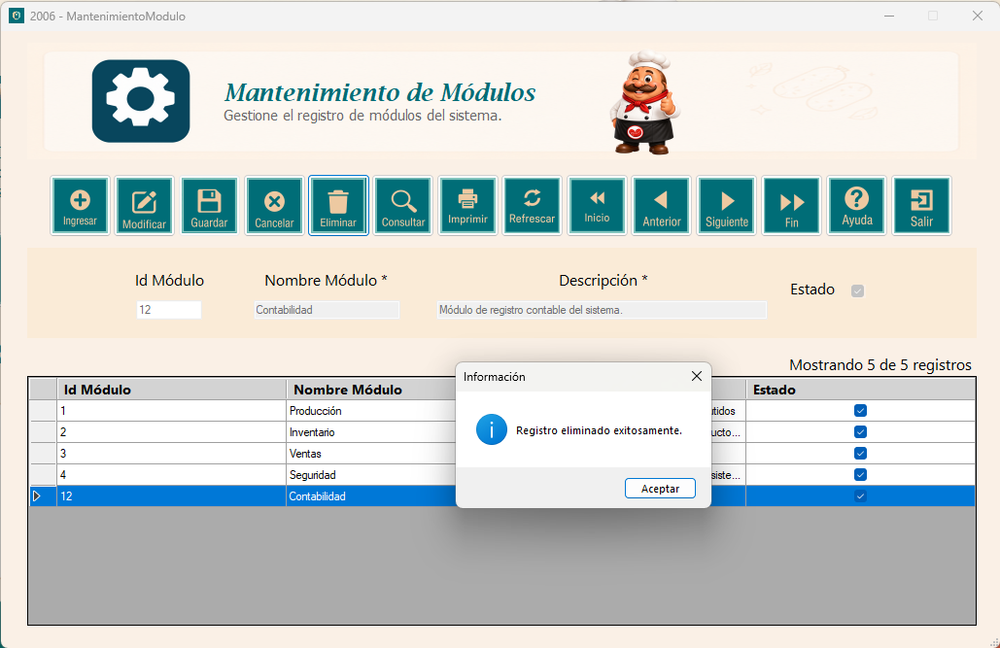
Este botón es especial, suponiendo que estábamos editando, ingresando o filtrando un registro; este botón permite cancelar este tipo de acciones por si estamos en medio de este tipo de movimientos.
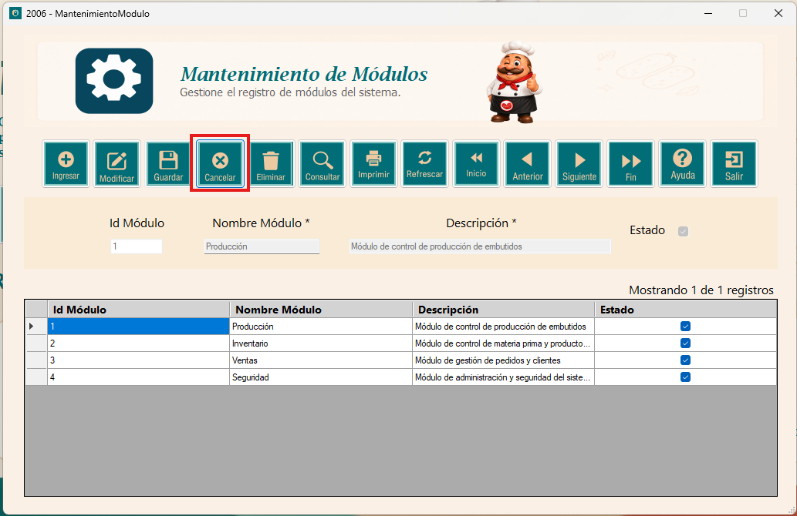
Este botón permite visualizar de manera formal el registro de datos de la tabla; pudiendo tener un archivo Word, Excel o PDF.
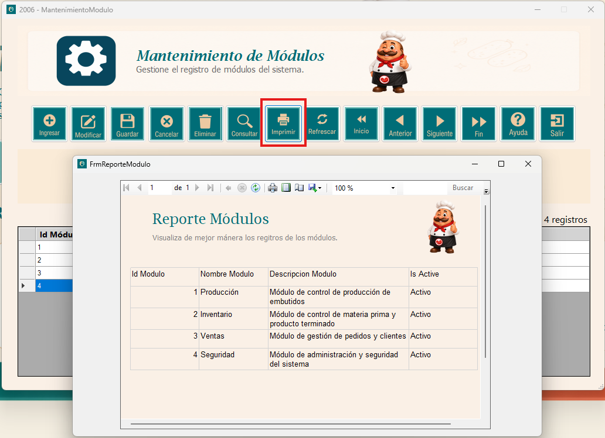
1. Refrescar; actualiza la base de datos, ideal si se realizaron cambios fuera de esta ventana (Directamente en la base de datos).
2. Inicio; nos posiciona en el primer registro de la tabla.
3. Anterior; retrocede un registro dentro de la tabla.
4. Siguiente; adelanta un registro dentro de la tabla.
5. Fin; nos posiciona en el último registro de la tabla.
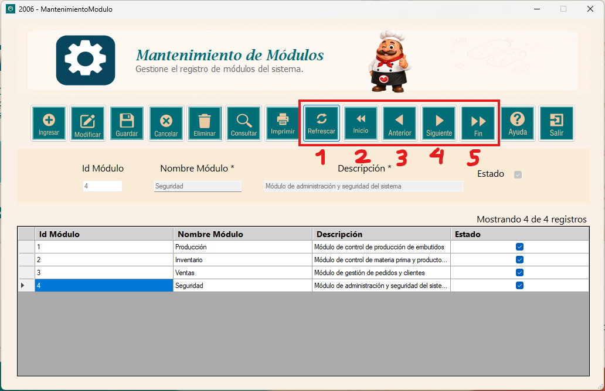
Este botón permite visualizar un archivo de ayudas que despliega información que el usuario debe de saber para utilizar correctamente el sistema.
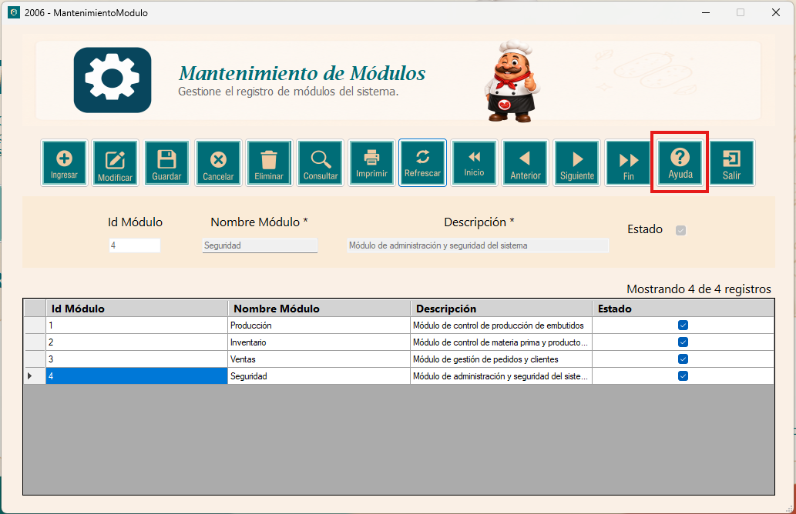
Al presionar este botón, cerraremos la ventana.
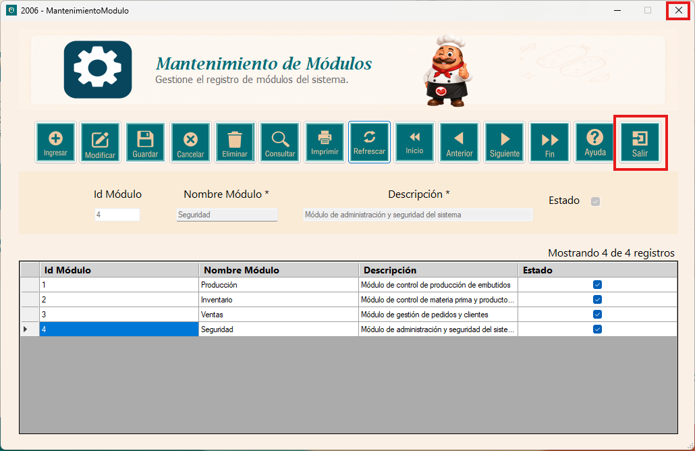